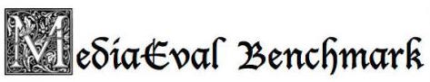
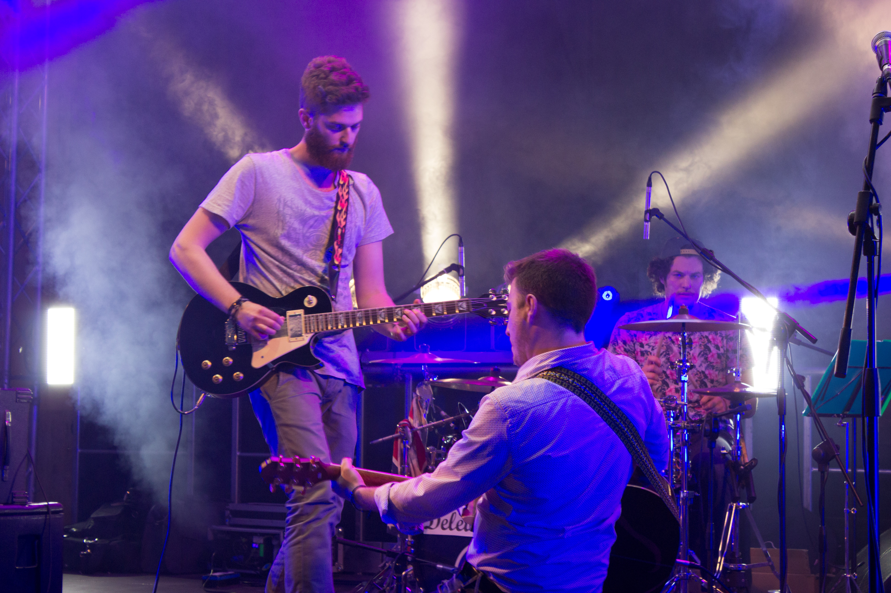
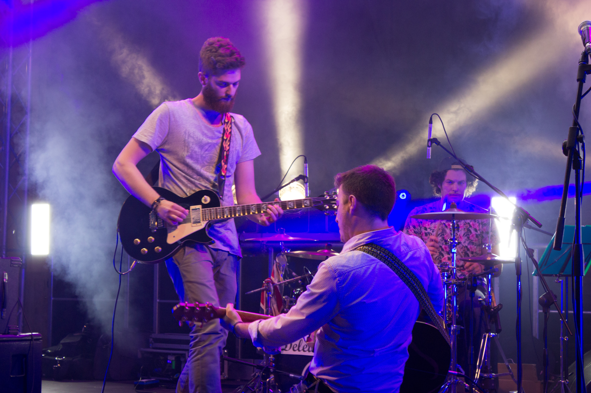
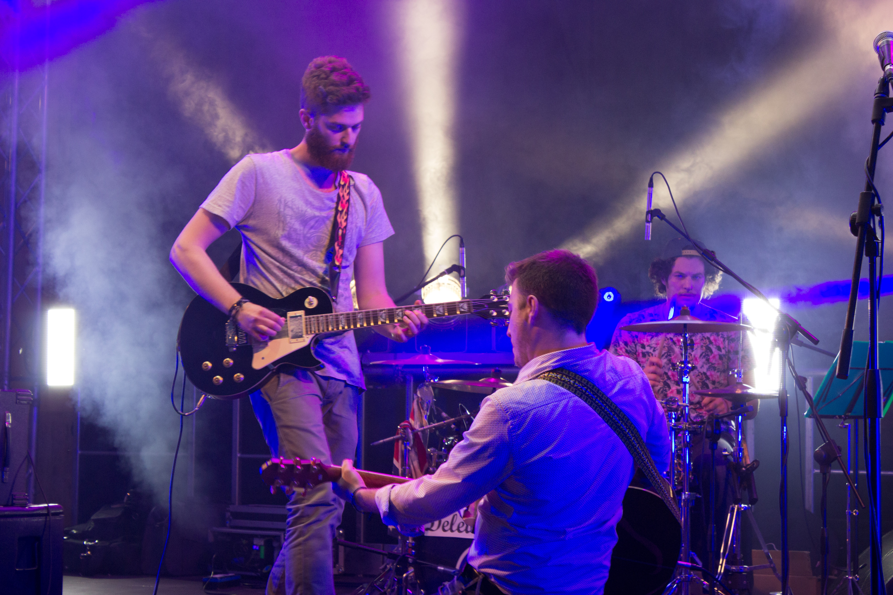
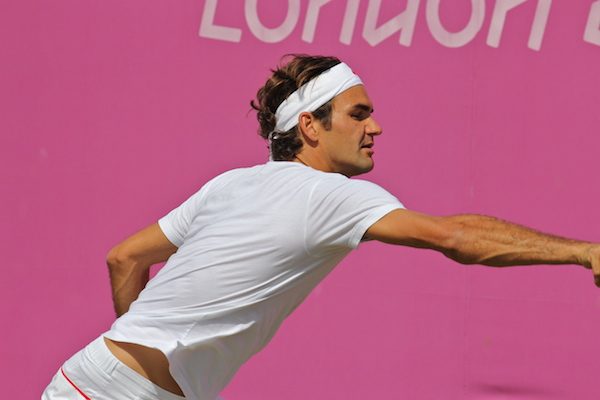
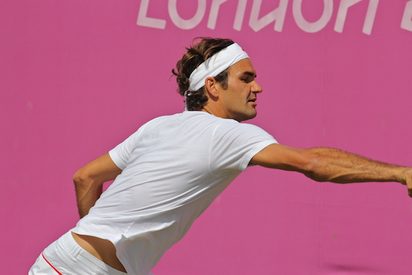
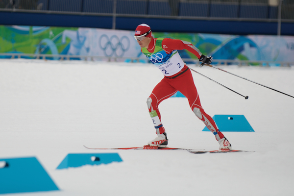
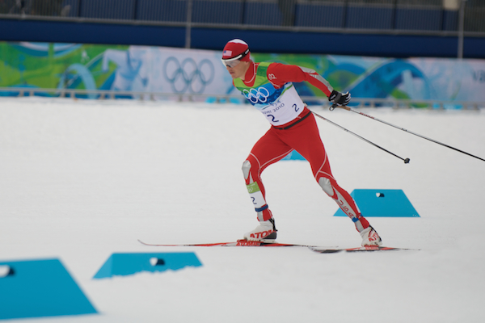

A collection of datasets I've contributed to or collected through research collaborations. These datasets span computer vision, robotics, multimedia, and audio-visual processing. Each dataset includes access links, detailed documentation, and citation information for researchers and practitioners.
CORSMAL Containers Manipulation
A dataset with 1,140 audio-visual-inertial recordings of people interacting with 15 containers, using 4 cameras (RGB, depth, and infrared) and an 8-element circular microphone array. Containers are either empty or filled at 2 different levels (50%, 90%) with 3 different types of content (water, pasta, rice). Includes activities like pouring liquids in glasses/cups and shaking food boxes.
📊 Access Dataset
📋 BibTeX Citation
@misc{Xompero2020CCM,
title = {CORSMAL Containers Manipulation},
author = {Xompero, Alessio and Sanchez-Matilla, Ricardo and Mazzon, Riccardo and Cavallaro, Andrea},
organization={Queen Mary University of London},
doi={https://doi.org/10.17636/101CORSMAL1},
year = {2020}
}

CORSMAL Containers
A vision dataset of 23 transparent and non-transparent containers, such as drinking cups, drinking glasses, and bottles. Each container is placed on a table in two different setups with varying lighting and background conditions. Observed by two cameras with wide-baseline configuration, acquiring RGB, depth, and narrow-baseline stereo infrared images.
📊 Access Dataset
📋 BibTeX Citation
@misc{Xompero2020Containers,
title = {CORSMAL Containers},
author = {Xompero, Alessio and Sanchez-Matilla, Ricardo and Mazzon, Riccardo and Cavallaro, Andrea},
organization={Queen Mary University of London},
doi={https://doi.org/10.17636/corsmal2},
year = {2020}
}

X-View: Cross-Camera View Overlap Recognition
A dataset for cross-camera view overlap recognition and spatial alignment. Contains multi-view camera recordings from multiple cameras placed at different positions and orientations. Useful for applications in distributed camera networks, surveillance systems, and multi-camera tracking.

CAV3D: Audio-Visual 3D Speaker Tracking
A dataset for 3D speaker tracking using co-located audio-visual sensing. Collected with a monocular color camera paired with an 8-element circular microphone array (96 kHz sampling). Video at 15 FPS. Includes synchronized data from 4 hardware-triggered CCD cameras at room corners. Supports up to 3 simultaneous speakers in a calibrated, annotated environment.
📊 Access Dataset
📋 BibTeX Citation
@article{Qian2019TMM,
title = {Multi-speaker tracking from an audio-visual sensing device},
author = {Qian, X. and Brutti, A. and Omologo, L. and Cavallaro, Andrea},
journal={IEEE Transactions on Multimedia},
volume={21},
number={10},
month=mar,
year = {2019}
}

 




MediaEval SEM 2015: Multi-User Event Media
Three event datasets collected for the Synchronization of Multi-User Event Media task at MediaEval 2015. Tour de France 2014: 33 galleries of images from Flickr covering the entire competition. NAMM 2015: 420 Flickr images and 32 YouTube videos in 19 galleries from the Los Angeles event. Spring Party Salesiani 2015: Videos and pictures captured by attendees during a students' party in Trento, Italy.
 

 



MediaEval SEM 2014: Olympic Games Datasets
Two Olympic Games image datasets from the Synchronization of Multi-User Event Media task at MediaEval 2014. London Olympics 2012: 2,124 images in 37 galleries capturing the Olympic Games. Vancouver Winter Olympics 2010: 1,351 images in 35 galleries representing various competitions. All images gathered from Flickr and made available under Creative Commons license for research purposes.